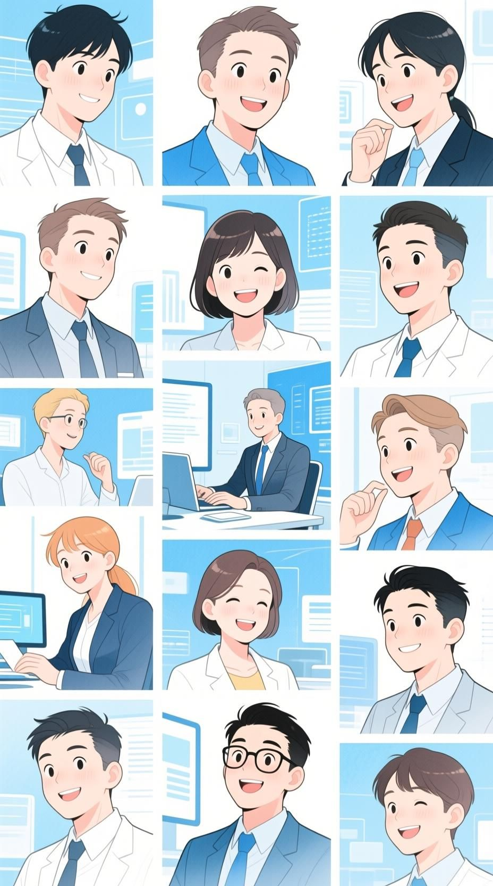
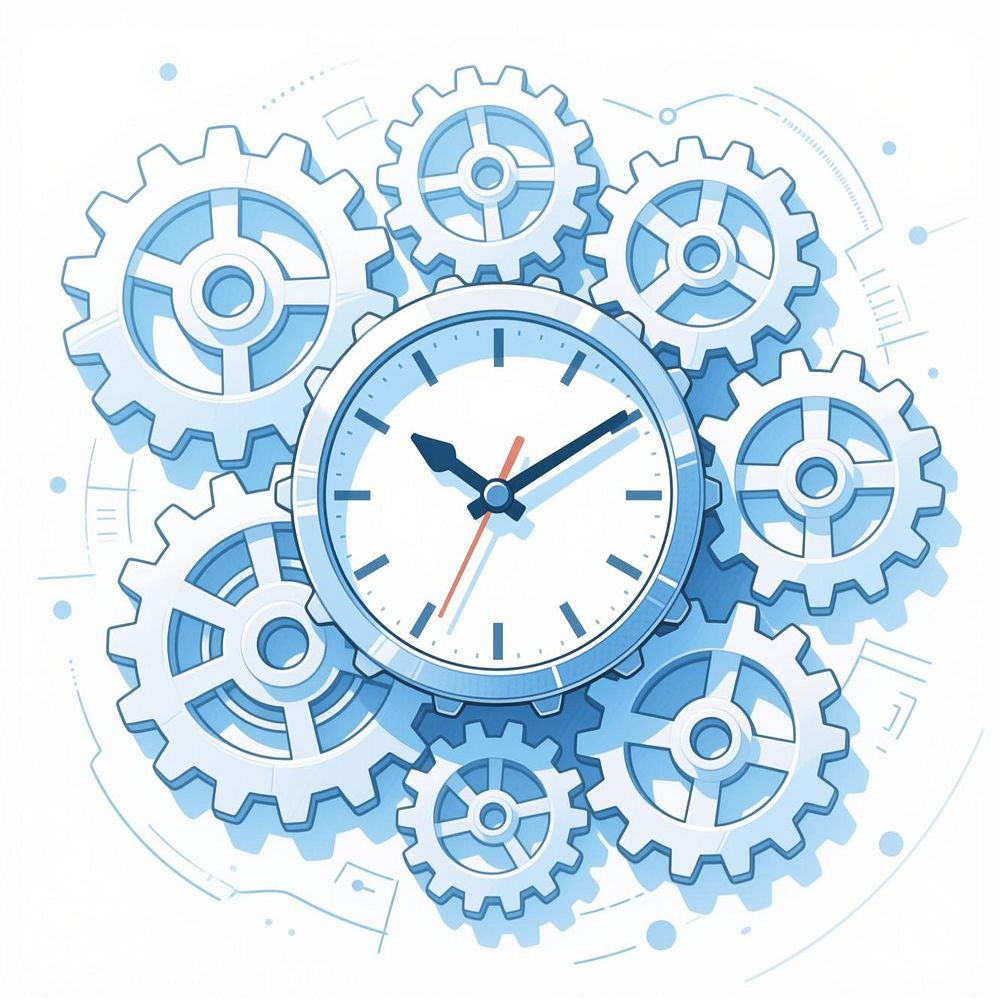
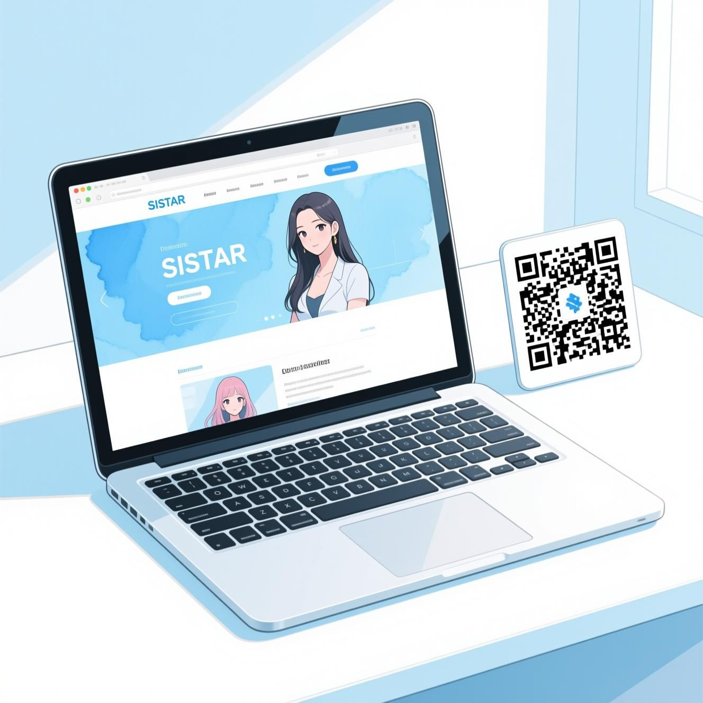

challengers - apply - team spirits
team spirits
"Unleash Your Inner Innovator — Payment & 30% Profit-Sharing Rewards, Team-Spirit Culture, Academic Training Curriculums, and Community Forums of SISTAR Challengers."
▫️ Payment Principles, 30% Profit-Sharing & Motivation Programs
We replace rigid corporate hierarchies with an algorithmic meritocracy where up to 30% of net project profits is shared directly with project participants:
- • Five-Group Share Allocation & 10% Individual Cap: The shared profit pool is distributed across Group I (35%), Group II (25%), Group III (15%), Group IV (10%), and Group V (5%) based on role weight and AI-evaluated Workspace performance, capped at 10% per individual.
- • Innovatives on Payment & Long-Term Ownership: Combines monthly base compensation, direct sales incentives, target achievement bonuses, order-linked random drawing pools, activity mileage, academic sponsorship, and project equity/partnership pathways.


▫️ SISTAR Team-Spirit Culture, Training Curriculums & Community Q&A
Rooted in our core belief that “Together Gets Stronger,” we foster a vibrant international community of lifelong learners and innovators:
- • Unleash Your Inner Innovator (Team-Spirit Programs): Engaging social, educational, informative, and entertainment gatherings connecting Challengers across Korea, Indonesia, Vietnam, and global bases.
- • SISTAR Camp & Academic Curriculums: Weekly and monthly online/offline training sessions (Learning by Doing), video guides (Benefits Vids, Guide Vids), and interactive Q&A forums certifying members as licensed AI Specialists.

▫️ Detailed Archive: Unleash Your Inner Innovator
Comprehensive operational records, strategic frameworks, and source specifications preserved from Unleash Your Inner Innovator:
- • Unleash Your Inner Innovator
- • The SISTAR Challenge: Where Your Ideas Become Impact
- • Join the Inaugural Session | 3Q 2025
- • Are You Ready to Build the Future?
- • Turn concepts into profitable businesses
- • Master skills that define tomorrow's industries
- • Connect with a community that fuels your ambition
- • Make a tangible, positive impact on the world
- • If you answered yes, your journey starts here.
- • Become an Innovator with SISTAR!
- • The SISTAR Challenge Program is not just another course. It's a dynamic ecosystem designed for one purpose: to empower you.
- • Acquire cutting-edge skills for tomorrow's industries.
- • Create impactful projects and launch new businesses.
- • Expand your professional network and influence.
- • A Program Designed for Your Success
- • By joining the SISTAR Challenge, you will:
- • Master In-Demand Knowledge
- • Stay ahead of the curve in rapidly evolving fields.
- • Develop Profitable Ventures
- • Learn the strategies to turn your ideas into income.
- • Become a Recognized Specialist
- • Deepen your expertise and build your personal brand.
- • Create Meaningful Social Impact
- • Apply your skills to make a real difference.
- • The 7 Pillars of Growth
- • Master frameworks for sustainable success
- • Learn efficiently in a structured program
- • Engage in enjoyable activities with supportive peers
- • Focusing on the Future: Our Cutting-Edge Topics
- • Our first session kicks off in Q3 2025 with a curriculum designed for immediate real-world application.
- • Go beyond the hype. Learn to strategically integrate and manage artificial intelligence systems for maximum efficiency and impact.
- • AI Business Development
- • Discover how to identify and build new revenue streams, products, and services powered by AI.
- • Cross-Border eCommerce
- • Learn to navigate the complexities of international online trade, from logistics and marketing to payments and localization.
- • We Believe in Learning by Doing
- • SISTAR is where knowledge meets action. We provide a powerful platform to transform what you learn into something tangible.
- • Interactive Online Activities
- • Engage in live workshops, collaborative projects, and skill-building sessions that keep you motivated and on track.
- • Robust Business Development
- • Access the resources, mentorship, and support needed to launch your venture and take it to market.
- • Your Network is Your Greatest Asset
- • At SISTAR, collaboration isn't just a buzzword—it's at the core of everything we do. You are not joining a program; you are joining a community .
- • Work with like-minded "Innovators" to build, test, and refine your concepts.
- • Connect with a diverse group of entrepreneurs, specialists, and mentors.
- • Share tools, knowledge, and opportunities in a community built on mutual growth.
- • Are You a SISTAR Innovator ?
- • This program is for the ambitious, the curious, and the determined. We welcome:
- • Aspiring Entrepreneurs
- • You have an idea and need the framework and community to launch it.
- • Established Professionals
- • You want to upskill, pivot your career, or integrate new technologies.
- • Creative Problem-Solvers
- • You are passionate about finding innovative solutions to real-world challenges.
- • You are driven by a desire to constantly grow and stay ahead of the curve.
- • Your Path to Becoming an Innovator
- • Enroll in our 3Q 2025 session and gain access to our expert-led curriculum.
- • CONNECT WITH THE COMMUNITY
- • Engage with fellow innovators, mentors, and partners through our online platform.
- • Apply your new knowledge to a real-world business idea or social impact venture.
- • Utilize SISTAR's business development resources to take your project to the next level.
- • We provide the roadmap. You drive the journey.
- • What makes SISTAR different?
- • Practical, hands-on learning approach
- • Focus on building real businesses, not just theory
- • Community-driven support system
- • Cutting-edge curriculum that evolves with industry trends
- • Inaugural Session: 3Q 2025
- • Spaces are limited. Secure your spot early.
- • Explore AI Management, AI Business Development, and Cross-Border eCommerce.
- • Unlock your potential through 7 key areas: Knowledge, Ventures, Expertise, Business Acumen, Social Impact, Time Optimization, and Dynamic Environment.
- • Follow a 4-step path: Join the Challenge, Connect with the Community, Build Your Project, and Launch & Grow.
- • What Our Early Members Are Saying
- • "SISTAR's approach to innovation is exactly what I've been looking for - practical, community-driven, and focused on real results."
- • "The combination of AI expertise and business development is the perfect toolkit for today's rapidly changing market."
- • "I'm excited about connecting with like-minded innovators who want to make a real impact."
- • Creative Problem-Solver
- • Ready to Build the Future?
- • The world needs your ideas. Don't wait to make an impact.
- • Join the Inaugural SISTAR Challenge Program today!
- • Visit our website: sistarcompany.com
- • Questions? Email us at denniiku@sistarcompany.com
- • Spaces for the 3Q 2025 session are limited
- • SISTAR: Make It. Together.

▫️ Detailed Archive: SISTAR Team-Spirit Programs
Comprehensive operational records, strategic frameworks, and source specifications preserved from SISTAR Team-Spirit Programs:
- • SISTAR Team-Spirit Programs
- • Igniting a shared sense of purpose and camaraderie among all team members, no matter their location.
- • Building a Connected Global Community
- • Creating strong bonds and seamless collaboration across diverse cultures and geographical boundaries.
- • Unlocking Collective Strength
- • Empowering individuals and teams to achieve greater success by working together, making the whole truly stronger.
- • Welcome & Onboarding Programs
- • A sense of belonging starts from the very first day. These comprehensive programs ensure new Challengers feel welcomed and integrated into our community immediately, setting the foundation for long-term success and connection.
- • Onboarding Buddy System
- • Every new Challenger is paired with an experienced team member (a "Vanguard" or "Luminary") for their first month. This buddy serves as a friendly, informal guide for navigating our culture, asking questions, and making initial connections.
- • "Welcome to the Galaxy" Team Lunch
- • On a new Challenger's first day, their immediate project team holds a virtual lunch, with a meal delivery voucher provided by the company. This is a purely social event focused on getting to know each other personally, not on work.
- • We create a dedicated space on our Company Web & App where existing team members can post welcome messages, fun GIFs, and introductory notes for the new Challenger during their first week.
- • Collaborative Work Programs
- • We build team spirit by working together in innovative and supportive ways that break down silos and foster cross-functional collaboration.
- • Quarterly Innovation Sprints
- • A week-long event where Challengers from different projects can form temporary teams to tackle a new business challenge or develop an idea from our "Idea Factory". This fosters cross-team collaboration and creative problem-solving.
- • For specific tasks, we pair a Challenger who is an AI expert with one who is still learning. This creates a micro-mentorship opportunity that accelerates skill development and reinforces our "Learning by Doing" philosophy.
- • At the start of each week, project teams hold short, informal video calls to share priorities and offer support. This is a chance to connect, align, and help each other overcome challenges before they become roadblocks.
- • These collaborative initiatives ensure that knowledge flows freely across our organization, creating stronger bonds and better outcomes for everyone involved.
- • Social & Wellness Programs
- • Connecting on a personal level is crucial for building a strong community, especially in our remote-first environment. These programs create meaningful connections beyond work.
- • We host dedicated online channels for non-work interests. Whether you're passionate about running (sisRun), mindfulness (SISTAR Mindfulness), or gaming, you can connect with like-minded colleagues. The company provides a small budget for these Hubs to organize virtual events, like an online gaming tournament or a guided meditation session.
- • Global "Coffee Roulette"
- • An opt-in program where our system randomly pairs two Challengers from different teams and countries for a 15-minute, informal virtual coffee chat each month. This is a fantastic way to meet new people and strengthen our global network.
- • Recognition & Celebration Programs
- • Feeling valued is essential for belonging. These programs are designed to celebrate individual and team achievements publicly, creating a culture of appreciation and shared success.
- • A dedicated chat channel where any team member can give a public shout-out to a colleague for their exceptional work, help, or positive attitude. This peer-to-peer recognition builds a culture of gratitude.
- • Project Milestone Celebrations
- • When a project achieves a major milestone, the entire team receives a collective bonus and a special "milestone" digital badge. This reinforces our commitment to sharing in the success that we build together.
- • The Annual SISTAR Awards
- • A fun, year-end virtual awards ceremony with categories like "The AI Innovator Award" and "The 'Together Gets Stronger' Collaboration Award." Winners receive a prize and company-wide recognition for their outstanding contributions.
- • Your Journey Within SISTAR - To recognize loyalty and sustained contribution, we've created a tiered system. As you grow with us, you'll advance through the ranks, unlocking new benefits and opportunities.
- • Qualification: All members who successfully complete the SISTAR Onboard Training.
- • Full access to our core payment and rewarding programs
- • A digital welcome kit and access to all company communication platforms
- • Enrollment in the SISTAR Academy for continuous learning
- • Qualification: 6+ months of continuous project engagement.
- • An exclusive "Vanguard" digital badge for your company profile
- • Priority consideration for new and high-profile projects
- • Access to advanced workshops and guest speaker series at the SISTAR Academy
- • Qualification: 12+ months of continuous engagement and having successfully completed at least two major projects.
- • An exclusive "Luminary" status and a special gift to mark the achievement
- • A formal invitation to the annual "SISTAR Summit"
- • Eligibility to host paid workshops for the SISTAR Academy
- • Qualification: By invitation only, based on exceptional long-term contribution, leadership, and embodiment of SISTAR's core values.
- • A voice in the company's strategic planning sessions
- • Eligibility to lead a SISTAR Base or an international initiative
- • The highest tier of profit-sharing and special project bonuses
- • Online Team-Building Activities
- • We believe that strong bonds are built through shared experiences. Our monthly and quarterly online programs create opportunities to connect, collaborate, and have fun together in our virtual workspace.
- • "SISTAR Connect" Social Hour
- • A monthly, informal virtual get-together where work talk is off-limits. Join us for games, casual conversation, and getting to know your fellow Challengers on a personal level.
- • Quarterly AI Innovation Challenge
- • Teams form to tackle a business challenge using our AI tools. Winners receive a bonus, recognition in "The SIGNAL STAR Post", and the opportunity to see their idea implemented.
- • "Project Showcase" Day
- • A quarterly celebration where teams present their achievements in a fun, supportive environment, followed by virtual entertainment.
- • Offline Activities & Global Connections
- • While we thrive in our digital workspace, nothing replaces the power of in-person connections. Our regional and annual offline activities bring our global community together in meaningful ways.
- • An exclusive, all-expenses-paid retreat for our Luminary and Sentinel members. This event will feature strategic workshops, team-building challenges, and leisure activities at inspiring locations, such as our planned camp in Bali.
- • As our global presence grows, our Area Managers at each SISTAR Base will organize semi-regular local meetups. This is a chance for Challengers in the same region to connect in person over dinner or a fun local activity.
- • "The bonds we create in person strengthen everything we do together online. These experiences create memories that last a lifetime and partnerships that drive our success."
- • To foster organic connections, we have dedicated online spaces for members with shared interests. Join a "Hub" to connect with colleagues who share your passions, creating friendships that extend beyond work projects.
- • Connect with fellow runners, share training tips, participate in virtual races, and motivate each other to reach fitness goals.
- • Join guided meditation sessions, share wellness practices, and support each other's mental health journey.
- • Organize tournaments, share gaming experiences, and bond over your favorite games with colleagues worldwide.
- • Share knowledge, discuss industry trends, and grow together through continuous learning and development.
- • Showcase your artistic talents, collaborate on creative projects, and inspire each other through various forms of expression.
- • Together Gets Stronger
- • At SISTAR, our Royalty Program is more than just benefits and activities—it's our commitment to building a deeply connected global community where every Challenger feels valued, supported, and empowered to grow.
- • From Challenger to Sentinel
- • Designed for connection

▫️ Detailed Archive: Payment & Rewarding Programs SISTAR Challengers
Comprehensive operational records, strategic frameworks, and source specifications preserved from Payment & Rewarding Programs SISTAR Challengers:
- • Payment & Rewarding Programs SISTAR Challengers
- • Welcome, Challengers! At SISTAR, our compensation philosophy is deeply rooted in principles of partnership, transparency, and shared success. We firmly believe that the talented individuals who drive our innovative projects should be directly and generously rewarded for their invaluable contributions.
- • Our Compensation Philosophy
- • Our meticulously designed system offers both financial stability and exceptional high-earning potential through two distinct, yet complementary, monthly components that work together to create a comprehensive compensation package.
- • We believe in true collaboration where success is shared among all contributors
- • Complete clarity in how compensation is calculated and distributed
- • When projects thrive, everyone benefits proportionally from the achievements
- • Two-Component Compensation System
- • A consistent and predictable payment forming the stable foundation of your compensation, directly linked to your assigned contribution level and role within a project.
- • Monthly Rewarding Program
- • A dynamic, performance-based reward component that truly reflects the collective success and financial achievements of our projects.
- • Monthly Core Payment Structure
- • This component serves as your stable, predictable monthly income, meticulously funded by a dedicated Total Expense Budget specifically allocated for Challenger core payments.
- • Key Advantage: Challengers at SISTAR can apply for and contribute to multiple projects simultaneously, thereby maximizing their potential income streams.
- • Before commencing work on any project, each Challenger will have access to a clear simulation that provides an advance understanding of their potential monthly income, ensuring complete transparency and informed decision-making.
- • The Group System Explained
- • Challengers are strategically assigned to a specific group following a comprehensive evaluation of their role, including assessment of assigned tasks, complexity of responsibilities, and expected time commitment.
- • Role assessment and task complexity analysis
- • Time commitment evaluation
- • Responsibility level determination
- • Pre-defined weight assignment
- • Each group is assigned a pre-defined weight, which directly determines its proportionate share of the total expense budget, ensuring compensation aligns with contribution level.
- • Group Weight Distribution (August 2025)
- • Reflecting significant responsibility and time commitment with the highest contribution level
- • Indicating substantial contribution to project success with moderate responsibility
- • Acknowledging valuable contributions and foundational support to the team
- • Core Payment Calculation Example
- • To illustrate how the system works, let's examine a hypothetical Total Expense Budget of Rp 10,000,000 for the month:
- • Rp 10,000,000 × 50% = Rp 5,000,000
- • Rp 10,000,000 × 30% = Rp 3,000,000
- • Rp 10,000,000 × 20% = Rp 2,000,000
- • This program truly embodies our fundamental "shared success" principle, offering a variable and exciting reward directly linked to the tangible financial success and overall progress of our diverse projects.
- • Projects like "PetFood Imported" and "Online Trade" generate monthly income
- • Total Income Budget is created from successful business activities
- • Proportional Distribution
- • Rewards distributed using identical group weighting system for fairness
- • Rewarding Program Distribution
- • The Total Income Budget is meticulously distributed using the identical group weighting system applied to the Core Payment, ensuring fairness and consistency across both compensation components.
- • "As our projects generate more income and achieve greater financial milestones, this dedicated budget grows proportionally, directly increasing everyone's reward potential."
- • This creates a powerful incentive for collective growth where everyone benefits from our shared achievements.
- • Rewarding Program Example Calculation
- • Assuming a Total Income Budget of Rp 10,000,000 for the month, demonstrating the direct link between project success and individual rewards:
- • Total Monthly Compensation Overview
- • Your total monthly compensation at SISTAR Challengers is the transparent sum of your Core Payment and your Reward, offering a clear and comprehensive view of your earnings.
- • Group A Group B Group C
- • Rp 10,000,000 Core: Rp 5,000,000 Reward: Rp 5,000,000
- • Rp 6,000,000 Core: Rp 3,000,000 Reward: Rp 3,000,000
- • Rp 4,000,000 Core: Rp 2,000,000 Reward: Rp 2,000,000
- • Performance Evaluation & Growth
- • Regular Evaluation Process
- • To ensure both fairness and dynamism within our system, your group assignment and overall performance are meticulously evaluated on a regular basis.
- • Skill enhancement assessment
- • Increased responsibility evaluation
- • Project complexity analysis
- • Time commitment review
- • As you take on more responsibilities, enhance your skills, or as projects evolve and grow in complexity, your group assignment may be adjusted.
- • This allows for continuous growth and advancement within our structured system, recognizing and rewarding increased contributions.
- • Key Insight: The size of the rewarding budget is directly linked to our collective effort—the more successful our projects are, the greater the rewards we all share.
- • Innovation in Payment: Motivations vs. Fair Evaluation
- • SISTAR champions an innovative approach to payment, meticulously balancing the critical values of "Motivations vs. Fair Evaluation." This ensures our compensation structure is both equitable and profoundly inspiring.
- • Tailored rewards for individual excellence and outstanding achievements that recognize unique contributions.
- • Recognizing and celebrating the collaborative success of our project teams through shared achievements.
- • Surprising and delightful acknowledgments of effort and dedication when least expected.
- • Comprehensive Incentive Programs
- • Immediate recognition and rewards for quick wins and exceptional daily performance
- • Quarterly and semi-annual incentives for sustained performance and project milestones
- • Annual rewards and career advancement opportunities for long-term commitment and growth
- • Opportunities for Challengers to gain a stake in the success of projects they contribute to, fostering deeper commitment and shared prosperity.
- • Creative and enjoyable initiatives to celebrate milestones and foster a positive, vibrant work culture.
- • Optimized Working Environment & Benefits
- • At SISTAR, we are profoundly committed to providing an optimal working environment that is both futuristic in its administrative management and deeply empathetic to the dynamics of modern work.
- • Streamlined processes and advanced technological tools significantly reduce time spent on routine administrative tasks, allowing greater focus on impactful creative work.
- • Maximized Income Potential
- • Clear pathways and abundant opportunities for Challengers to continuously elevate their earning capabilities through exceptional contributions.
- • Unparalleled opportunities and extensive resources for team members to develop skills in cutting-edge artificial intelligence and become sought-after AI specialists.
- • Our progressive approach aligns with evolving professional landscape trends, ensuring superior financial returns, remarkable time efficiency, and holistic enhancement of personal and professional benefits through comprehensive profit sharing and rewarding programs.
- • Commitment: We share progress updates monthly and ensure all agreements regarding compensation and rewarding programs are made transparently and in advance, fostering trust and clarity.

▫️ Detailed Archive: Join the SISTAR Revolution
Comprehensive operational records, strategic frameworks, and source specifications preserved from Join the SISTAR Revolution:
- • Join the SISTAR Revolution
- • Transform your career with innovative work environments, flexible opportunities, and a vibrant community that values creativity, collaboration, and professional growth.
- • Innovative Work Environment
- • Innovative approaches to business and work that challenge conventional methods and foster creative thinking.
- • Flexible working hours and location to support your work-life balance and productivity preferences.
- • Access to SISTAR workspace and all necessary resources required to foster professional growth.
- • Connected to each other & never isolated for a vibe- working environment. Transparent & fair management with AI automation. Emphasis on a motivating and encouraging work atmosphere.
- • Financial and Lifestyle Advantages
- • Improved Lifestyle Benefits
- • Improved lifestyle through benefits related to time, income, and additional earnings that enhance your overall quality of life.
- • Stable Income Structure
- • Stable monthly income with a basic fixed share from budgets, plus performance-based earnings. Income variation is limited on team-working, to ensure stability and reflect expertise.
- • Innovative Payment Models
- • Innovative payment structures, including "Special budget in order, chip-in & pay" and "Introduce & Paid" models.
- • Project and Task Management
- • Opportunity to join multiple modularized projects, forming a comprehensive business model.
- • Daily, weekly, and monthly tasks are assigned and agreed upon for fair evaluation.
- • Project is a modularized working group as plugged-in with other projects for a business model, to enhance specialities of each member.
- • Professional Development & Community
- • Provision of professional kits and training to enhance your skills and capabilities.
- • Academic programs and licenses to support your continuous learning and professional certification.
- • On/off-site gatherings and social activities. Fun and enriching community as members of the SISTAR business hubs.
- • SISTAR Ecosystem & Opportunities
- • SISTAR membership offers privileges on SISTAR Projects. Opportunities for co-development and project utilization.
- • Strategic Partnerships
- • Partnerships with SISTAR Studio, commercial platforms, logistics, and brands.
- • Potential for ownership and shareholder involvement. Matching business opportunities.
- • Regional manager. Account holder exclusive to the territory.
- • Shared spaces for online commercial and logistics ventures.
- • Motivation programs (monthly incomes, incentives + fun rewarding programs, team bonus, individual mid-long term growth plan) on fair evaluation.
- • Communication accounts for 50% of the evaluation criteria. Fair evaluation linked to motivation.
- • Fully, vibe-working environment, as the only value-statement.
- • Specialities in Business Field
- • To advance your professional career and foster innovation, it's crucial to adapt to global trends and think beyond conventional business methods.
- • SISTAR proposes values and invites others to join. Our role is to be an idea factory, building robust business platforms, hubs, campaigns, and bases as part of the SISTAR Biz portfolio.
- • Innovation-Driven Culture
- • Experience innovative approaches to business and work in a transparent, AI-automated management environment that prioritizes motivation and encouragement.
- • Financial Stability & Growth
- • Enjoy stable monthly income with performance-based earnings, innovative payment structures, and comprehensive lifestyle benefits.
- • Professional Excellence
- • Access professional development through training, academic programs, and a vibrant community that supports your career advancement.
- • Benefit from SISTAR membership privileges, partnership opportunities, and potential ownership involvement in a comprehensive business ecosystem.
- • Ready to Transform Your Career?
- • Join the SISTAR Community
- • Become part of an innovative ecosystem that values creativity, collaboration, and professional growth. Experience the fully, vibe-working environment as our only value-statement.
- • Connect with us today and discover how SISTAR can transform your professional journey through innovative work environments, financial advantages, and comprehensive development opportunities.
▫️ Detailed Archive: SISTAR Training & Academic Programs
Comprehensive operational records, strategic frameworks, and source specifications preserved from SISTAR Training & Academic Programs:
- • SISTAR Training & Academic Programs
- • Establishing a structured approach to continuous learning and AI expertise development for our growing team of Challengers
- • Building Our Foundation
- • To establish a successful and continuous learning environment, we need a structured approach to preparation and execution. Our foundational preparations set the stage for transformative learning experiences.
- • Conduct initial skills gap analysis by surveying current Challengers and consulting with Project Leads to tailor content to actual member needs
- • Designate a section of the SISTAR Company Web & App as our official "Learning Hub" hosting all e-learning modules and resources
- • License foundational courses from reputable platforms while developing proprietary content on the "SISTAR Method"
- • The SISTAR Learning Hub
- • Your Central Learning Destination
- • Our dedicated Learning Hub within the SISTAR Company Web & App serves as the cornerstone of our educational ecosystem. This comprehensive platform brings together all training resources, schedules, and interactive learning modules in one seamless experience.
- • Centralized access to all training materials
- • Interactive e-learning modules
- • Real-time progress tracking
- • Community discussion forums
- • Resource library and documentation
- • Seamless integration with your daily workflow
- • Ongoing Training Operations
- • Consistency and engagement are key to successful learning programs. Our systematic approach ensures every Challenger stays connected to continuous growth opportunities.
- • Publish quarterly training calendar on the Learning Hub and Google Calendar with mandatory onboarding sessions and optional growth workshops
- • Announce all training sessions two weeks in advance via email and app notifications, highlighting key benefits and project applications
- • Send feedback forms after every live session to support our Continuous Improvement value and program iteration
- • Monitor attendance and completion rates to identify impactful topics and recognize highly engaged learners
- • Two-Track Learning System
- • Our educational programs are designed with two distinct tracks: a core program for all Challengers and a specialized academic program for those pursuing AI expertise.
- • Core Challenger Training
- • Essential skills for every team member delivered through self-paced modules and live virtual workshops
- • SISTAR Ecosystem mastery
- • Agile methodology training
- • Innovation mindset development
- • AI Specialist Academic Program
- • Advanced multi-tier program cultivating in-house AI experts through our "Learning by Doing" philosophy
- • Three progressive certification tiers
- • Practical capstone projects
- • Custom AI model development
- • Core Challenger Training Program
- • This track ensures every member has the essential skills to thrive in our ecosystem, delivered through a perfect blend of self-paced learning and interactive workshops.
- • Module 1: The SISTAR Ecosystem
- • Master our tech stack including Google Workspace & SISTAR App, understand our "Simple/Minimal" operational principles, and learn best practices for remote collaboration.
- • Goal: Equip new Challengers with operational knowledge for seamless integration
- • Module 2: The Agile Challenger
- • Project Management Excellence
- • Deep dive into the SISTAR project lifecycle, agile methodologies for remote teams, and effective communication with partners and investors.
- • Goal: Develop proficiency in our project management framework
- • Module 3: The Innovator's Mindset
- • Business Innovation Focus
- • Experience the "Idea Factory" workshop on brainstorming, understand our "Profit Sharing" business model, and learn fundamentals of digital marketing and branding.
- • Goal: Foster business-oriented and innovative thinking in all Challengers
- • SISTAR AI Specialist Academic Program 🤖
- • An advanced, multi-tier program designed to cultivate in-house AI experts, embodying our "Learning by Doing" philosophy. Progression is based on completing courses and practical capstone projects.
- • Tier 1: AI Practitioner
- • Foundation level certification focusing on understanding and applying existing AI tools to enhance project efficiency and outcomes.
- • Intermediate certification for strategically identifying AI opportunities and managing AI-driven project lifecycles.
- • Advanced certification for building, training, and deploying custom AI models that solve specific business needs.
- • Tier 1: AI Practitioner Certification
- • Foundation Level - Understanding and effectively applying existing AI tools to enhance project efficiency and outcomes.
- • AI 101: Demystifying Machine Learning
- • Comprehensive introduction to Neural Networks and Large Language Models, building foundational understanding of AI technologies
- • Prompt Engineering for Business
- • Master generative AI for text and image creation, focusing on marketing, content development, and business analysis applications
- • Learn to use AI tools for streamlining workflows and data processing, maximizing efficiency in daily operations
- • Capstone Project: Implement a generative AI tool into an existing project workflow and measure its impact on time savings or output quality.
- • Tier 2 & 3: Advanced AI Certifications
- • AI Strategist Certification (Intermediate)
- • Objective: Strategically identify new AI opportunities and manage AI-driven project lifecycles
- • AI Project Management: From data sourcing and model selection to deployment and iteration
- • Ethics & Responsibility in AI: Understanding bias mitigation and ensuring transparent AI use
- • Introduction to ML Models: Manager-level overview of regression, classification, and clustering
- • Capstone: Develop a strategic proposal for a new AI-powered SISTAR platform feature with ROI analysis
- • AI Developer Certification (Advanced)
- • Objective: Build, train, and deploy custom AI models that solve specific business needs
- • Python for AI: Programming skills using Pandas, Scikit-learn, and TensorFlow libraries
- • Applied Machine Learning: Hands-on model building and training with SISTAR datasets
- • API & Model Deployment: Integrating custom models into the SISTAR tech stack
- • Capstone: Build and deploy a working AI model prototype that automates processes or provides new insights
- • Your Learning Journey Starts Now
- • Ready to transform your skills and become part of the next generation of AI-powered professionals? Our comprehensive training programs are designed to meet you where you are and take you where you want to go.
- • Essential training for every Challenger
- • AI Certification Tiers
- • Progressive specialization pathway
- • Empowering Challengers to shape the future through continuous learning and AI innovation
▫️ Detailed Archive: QnA
Comprehensive operational records, strategic frameworks, and source specifications preserved from QnA:
- • Search organization content